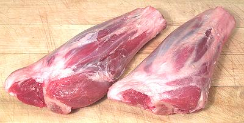

Lamb Shanks

Lamb shanks are popular in all lamb eating cultures. The meat is flavorful
and there's plenty of connective tissue to make for good soups. The photo
specimens were 7 inches long, 2-1/2 inches wide and 1-3/4 inches thick at
the big end. They weighed 11-1/2 ounces each.
More on Lamb / Mutton Cuts.
Buying:
These can be found in markets serving communities
from countries that use a lot of lamb: Turkey, Armenia, Middle East, North
Africa, Pakistan, etc.
Prep:
This depends on the recipe. Some recipes call for
the meat to be removed from the bones. The meat is actually quite easy to
remove from the bone. The outer membrane and fat are much easier to remove
from the meat after it has been removed from the bone.
While often not part of the recipe,
the bones should be browned well in the oven and used to make lamb stock
(see Recipe).
Yield:
One pound of shanks will yield 7.8 ounces of
uncooked meat (49%).
Cooking:
Shank meat is well exercised and there's a lot of
tough connective tissue, so long wet cooking is in order, at least 1/2 hour
off the bone or 1 hour on the bone.
as_shankz 091015 - www.clovegarden.com
©Andrew Grygus - agryg@clovegarden.com - Photos
on this page not otherwise credited © cg1
- Linking to and non-commercial use of this page permitted